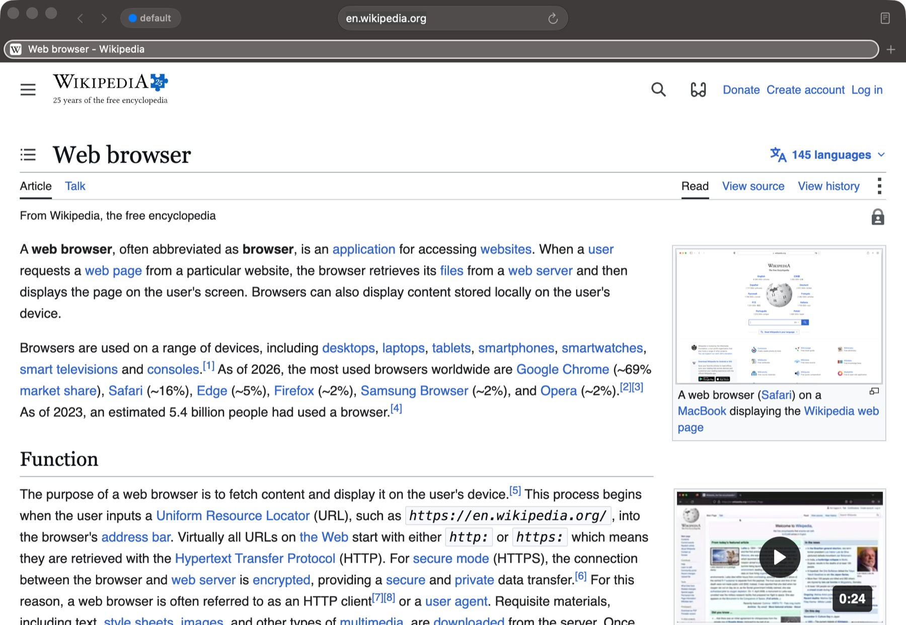
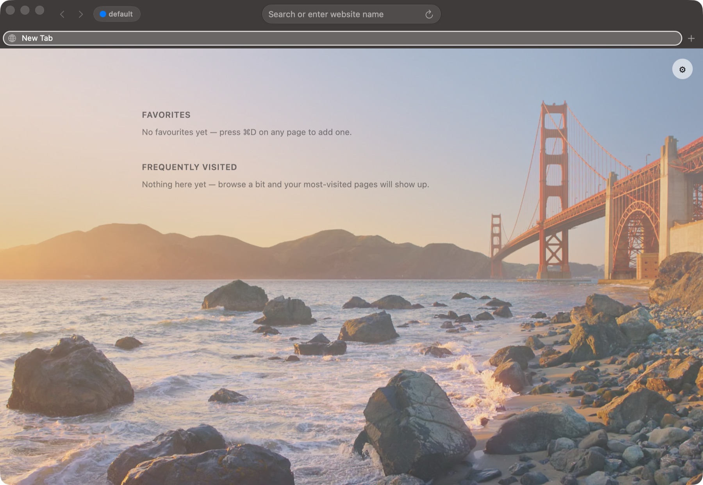

Profiles that are actually separate
Each profile gets its own cookies, history, bookmarks, passwords and cache — separate browser storage, not just a different colour. Switch, or run several windows side by side.
Chromium rendering inside a native Swift/AppKit shell — with real profiles, and rules that decide where each link opens.


Above: an ordinary page. Right: the start page, with a background picture of your own.
Each profile gets its own cookies, history, bookmarks, passwords and cache — separate browser storage, not just a different colour. Switch, or run several windows side by side.
Make it your default browser, then route by domain, URL pattern, or the app the link came from. Work links land in the work profile without you thinking about it.
Saved logins live in the macOS Keychain, scoped per profile. Cards and addresses fill in too, and you can import an export from another browser.
Groups, pinning, drag to reorder, per-tab mute with an audio indicator, a tab overview, and session restore when you reopen.
Reader mode, find in page, page zoom that sticks per site, print and export to PDF, and Visual Look Up on images.
Favourites and frequently visited, per profile, over your own background picture or a colour.
Chromium, via CEF. Pages render with the same engine Chrome uses, so sites behave the way they do everywhere else — including WebAuthn security keys and cross-device passkeys.
The shell is native. Tab strip, omnibox, menus, settings and panels are Swift and AppKit, talking to the engine through a thin Objective-C++ bridge. The chrome is Mac chrome, not a web page pretending to be one.
Signed, notarized, never sandboxed. Distributed with a Developer ID signature and an Apple notarization ticket. App Sandbox is deliberately off: a sandboxed app cannot register as the system default browser, which is the entire point of the routing rules.
It is version 0.1.0. A personal project, built in the open about its rough edges rather than pretending it has none.
Nothing is collected. There is no analytics, no telemetry, no crash reporting to a server, and no account. The app does not phone home, and there is no server to phone.
Your browsing stays on your Mac. History, bookmarks, downloads and site data are written to a per-profile directory in your own Library folder. Deleting a profile deletes its data with it.
Passwords use the system Keychain. Saved credentials are stored as Keychain internet-password items scoped to this app, never in a file the app rolls itself, and never transmitted anywhere. The companion command-line tool has no command that can print a password — a deliberate, permanent boundary.
Passkeys. Security keys and cross-device (QR / hybrid) passkeys work today through Chromium's WebAuthn stack. Passkeys stored in Apple Passwords — iCloud Keychain and Touch ID — require a restricted Apple entitlement that every non-Safari browser needs; that application is pending, and support will be integrated when it is granted.
Network requests are the page's own. Beyond what a site itself loads, the app makes no background requests of its own.
Open the DMG and drag Browser to Applications. Because it is notarized, macOS opens it without a Gatekeeper warning — no right-click-Open dance, no xattr command.
To make it your default browser and start routing links, open Settings → Links, click Make Default Browser…, then add rules there.
# optional: the companion CLI, bundled inside the app
ln -sf "/Applications/Browser.app/Contents/\
Resources/bin/browser" /usr/local/bin/browser
browser profiles
browser open https://example.com --profile Work
browser route-test https://github.com